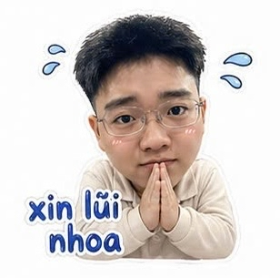
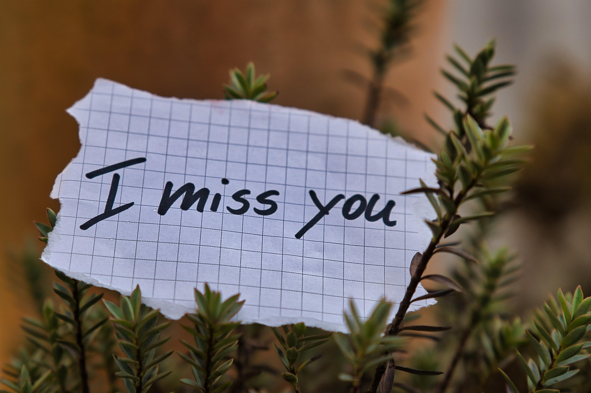

Bấm vào để mở thư...
"Hôm nay cũng đã gần 5 tháng mình không gặp nhau, không còn ở bên nhau nữa, không biết em đã nguôn giận anh chút nào chưa, không biết em có từng nhớ về anh lần nào không, nếu có anh hy vọng là những điều tốt đẹp của tụi mình. Anh biết lỗi của mình rất lớn, anh biết em cũng có giới hạn của em, nhưng những lời nói trước đó của anh đã vượt qua giới hạn đó nhiều lần. Anh cũng hiểu bây giờ anh gần như đã bít cửa rồi trong mắt gia đình em, bạn bè em anh rất tệ. Nhưng anh vẫn thật sự rất muốn được sửa chữa lỗi lầm của mình, vì người đó là em.
Anh còn cơ hội không, anh sẽ cố gắng hêt sức để nắm bắt điều đó.
Anh có thể mời em đi ăn tối không, anh không chắc nếu được gặp thì sẽ có thể làm lành như trước, nhưng anh chắc chắn mình đã tốt hơn trước nhiều, thật sự em đã là bài học rất lớn cho anh nhưng anh lại rất muốn em là tương lai của anh.
Em đồng ý lời mời của anh không, anh chờ câu trả lời của em, hoặc nếu không cũng không sao, anh hứa sẽ không xuất hiện trong đời em thêm môt lần nào nữa, sẽ không có thêm 1 tin gì từ anh khiến em bực bội nữa. Nhưng anh vẫn mong câu trả lời là có hay ít nhất tương lai mình vẫn có cơ hội làm lại. Anh tôn trọng quyết định của em."


Từ trái tim,
Hoàng Dương